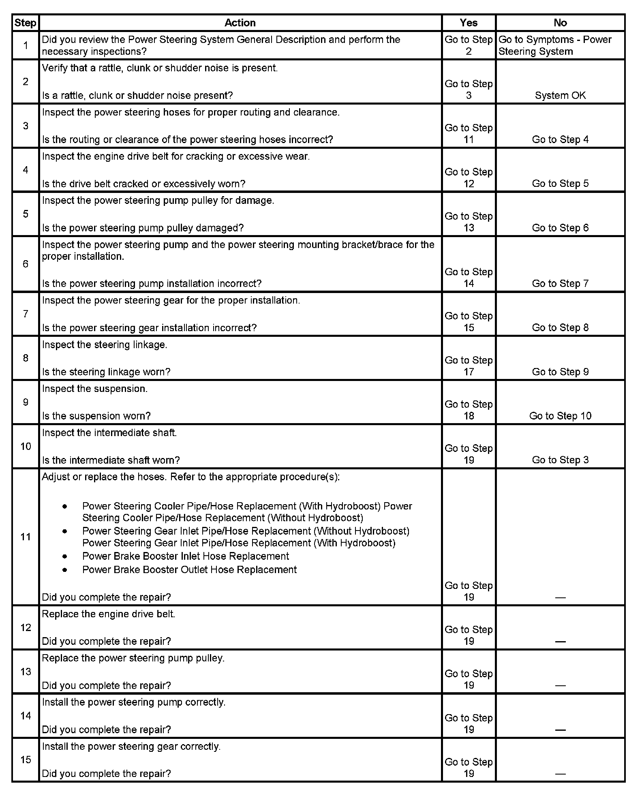
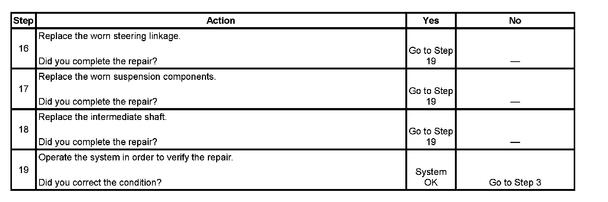

Operation CHARM
: Car repair manuals for everyone.
Home
>>
Cadillac
>>
2007
>>
Escalade ESV AWD V8-6.2L
>>
Repair and Diagnosis
>>
Steering and Suspension
>>
Steering
>>
Testing and Inspection
>>
Symptom Related Diagnostic Procedures
>>
Rattle, Clunk, or Shudder Noise from the Power Steering System
Rattle, Clunk, or Shudder Noise from the Power Steering System
Rattle, Clunk, or Shudder Noise from the
Power Steering
System
Step 1 - Step 15:

Step 16 - Step 19:
